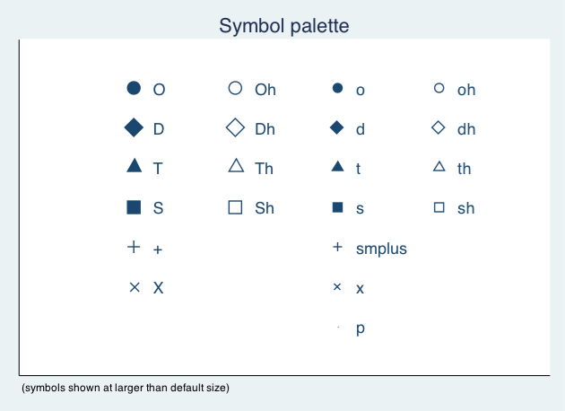
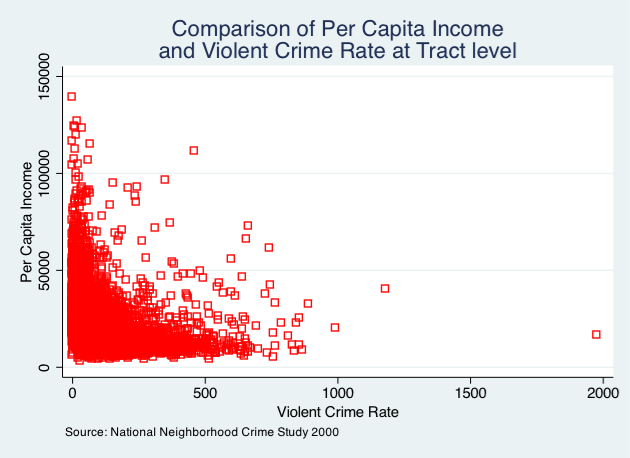

Stata Graphics
Topics
- Univariate graphs
- Bivariate graphs
Setup
Software and Materials
Follow the Stata Installation instructions and ensure that you can successfully start Stata.
Class structure and organization
- Please feel free to ask questions at any point if they are relevant to the current topic (or if you are lost!)
- Collaboration is encouraged - please introduce yourself to your neighbors!
- If you are using a laptop, you will need to adjust file paths accordingly
- Make comments in your Do-file - save on flash drive or email to yourself
Prerequisites
This is an intermediate-level Stata graphics workshop
- Assumes basic knowledge of Stata
- Not appropriate for people already well familiar with graphing in Stata
- If you are catching on before the rest of the class, experiment with command features described in help files
Goals
We will learn about Stata graphics by practicing graphing using two real datasets. In particular, our goals are to:
- Plot basic graphs in Stata
- Plot two-way graphs in Stata
Graphing in Stata
GOAL: To get familiar with how to produce graphs in Stata. In particular:
- Learn about graphing strategies
- Compare two examples of a bad graph and a good graph
Graphing strategies
- Keep it simple
- Labels, labels, labels!!
- Avoid cluttered graphs
- Every part of the graph should be meaningful
- Avoid:
- Shading
- Distracting colors
- Decoration
- Always know what you are working with before you get started
- Recognize scale of data
- If you are using multiple variables, how do their scales align?
- Before any graphing procedure review variables with
codebook,sum,tab, etc. - HELPFUL STATA HINT: If you want your command to go on multiple lines use
///at end of each line
Terrible graph

Much better graph

Univariate graphics
GOAL: To learn how to graph a single continuous and categorical variable. In particular:
- Graph a continuous variable using a histogram
- Graph a categorical variable using a bar graph
Our first dataset
- Time Magazine Public School Poll
- Based on survey of 1,000 adults in U.S.
- Conducted in August 2010
- Questions regarding feelings about parental involvement, teachers union, current potential for reform
- Open Stata and call up the datafile for today
Single continuous variable
Example: Histogram
- Stata assumes you are working with continuous data
- Very simple syntax:
hist varname
- Put a comma after your varname and start adding options
bin(#): change the number of bars that the graph displaysnormal: overlay normal curveaddlabels: add actual values to bars
Histogram options
- To change the numeric depiction of your data add these options after the comma
- Choose one:
density,fraction,frequency,percent
- Choose one:
- Be sure to properly describe your histogram:
title("insert name of graph")subtitle("insert subtitle of graph")note("insert note to appear at bottom of graph")caption("insert caption to appear below notes")
Histogram example
Axis titles & labels
- Axis title options (default is variable label):
xtitle("insert x axis name")ytitle("insert y axis name")
- Don’t want axis titles?
xtitle("")ytitle("")
- Add labels to X or Y axis:
xlabel("insert x axis label")ylabel("insert y axis label")
- Tell Stata how to scale each axis
xlabel("start\#(increment)end\#")xlabel(0(5)100)This would label x-axis from 0-100 in increments of 5
Axis labels example
hist F1, bin(10) percent title("TITLE") subtitle("SUBTITLE") ///
caption("CAPTION") note("NOTES") ///
xtitle("Here's your x-axis title") ///
ytitle("here's your y-axis title")
Single categorical variable
- We can also use the
histcommand for bar graphs- Simply specify the option
discrete
- Simply specify the option
- Stata will produce one bar for each level (i.e. category) of variable
- Use
xlabelcommand to insert names of individual categories
hist F4, title("Racial breakdown of Time Poll Sample") xtitle("Race") ///
ytitle("Percent") xlabel(1 "White" 2 "Black" 3 "Asian" 4 "Hispanic" ///
5 "Other") discrete percent addlabels
Exercise 0
Histograms & bar graphs
- Open the datafile,
NatNeighCrimeStudy.dta.
- Create a histogram of the tract-level poverty rate (
T_POVRTY).
- Insert the normal curve over the histogram.
- Change the numeric representation on the Y-axis to
percent.
- Add appropriate titles to the overall graph and the x axis and y axis. Also, add a note that states the source of this data.
- Open the datafile,
TimePollPubSchools.dta.
- Create a histogram of the question, “What grade would you give your child’s school†(
Q11). Be sure to tell Stata that this is a categorical variable.
- Format this graph so that the axes have proper titles and labels. Also, add an appropriate title to the overall graph. Add a note stating the source of the data.
Click for Exercise 0 Solution
- Open the datafile,
NatNeighCrimeStudy.dta.
- Create a histogram of the tract-level poverty rate (
T_POVRTY).
- Insert the normal curve over the histogram.
- Change the numeric representation on the Y-axis to
percent.
- Add appropriate titles to the overall graph and the x axis and y axis. Also, add a note that states the source of this data.
hist T_POVRTY, normal percent title("Poverty Rate Distribution Among Study Participants") xtitle("Poverty Rate") ytitle("Percent") note("Notes: Results are based on raw data")- Open the datafile,
TimePollPubSchools.dta.
- Create a histogram of the question, “What grade would you give your child’s school†(
Q11). Be sure to tell Stata that this is a categorical variable.
- Format this graph so that the axes have proper titles and labels. Also, add an appropriate title to the overall graph. Add a note stating the source of the data.
Bivariate graphics
GOAL: To learn how to produce two-way bivariate graphs. In particular, to learn:
- The
twowaycommand - The
twowaytitleoptions - The
twowaysymboloptions - How to overlay
twowaygraphs
Next dataset
- National Neighborhood Crime Study (NNCS)
- N=9593 census tracts in 2000
- Explore sources of variation in crime for communities in the United States
- Tract-level data: crime, social disorganization, disadvantage, socioeconomic inequality
- City-level data: labor market, socioeconomic inequality, population change
The twoway family
twowayis basic Stata command for all two-way graphs- Use
twowayanytime you want to make comparisons among variables - Can be used to combine graphs (i.e., overlay one graph with another)
- e.g., insert line of best fit over a scatter plot
- Some basic examples:
use NatNeighCrimeStudy.dta, clear
twoway scatter T_PERCAP T_VIOLNT
twoway dropline T_PERCAP T_VIOLNT
twoway lfitci T_PERCAP T_VIOLNTTwoway & the by statement

Twoway title options
- Same title options as with histogram
title("insert name of graph")subtitle("insert subtitle of graph")note("insert note to appear at bottom of graph")caption("insert caption to appear below notes")
Twoway title options example
twoway scatter T_PERCAP T_VIOLNT, ///
title("Comparison of Per Capita Income" ///
"and Violent Crime Rate at Tract level") ///
xtitle("Violent Crime Rate") ytitle("Per Capita Income") ///
note("Source: National Neighborhood Crime Study 2000")Twoway symbol options
- A variety of symbol shapes are available: use
palette symbolpaletteto see them andmsymbol()to set them

Twoway symbol options example
twoway scatter T_PERCAP T_VIOLNT, ///
title("Comparison of Per Capita Income" ///
"and Violent Crime Rate at Tract level") ///
xtitle("Violent Crime Rate") ytitle("Per Capita Income") ///
note("Source: National Neighborhood Crime Study 2000") ///
msymbol(Sh) mcolor("red")
Overlaying twoway graphs
- Very simple to combine multiple graphs by just putting each graph command in parentheses
twoway (scatter var1 var2) (lfit var1 var2)
- Add individual options to each graph within the parentheses
- Add overall graph options as usual following the comma
twoway (scatter var1 var2) (lfit var1 var2), options
Overlaying points & lines
twoway (scatter T_PERCAP T_VIOLNT) ///
(lfit T_PERCAP T_VIOLNT), ///
title("Comparison of Per Capita Income" ///
"and Violent Crime Rate at Tract level") ///
xtitle("Violent Crime Rate") ytitle("Per Capita Income") ///
note("Source: National Neighborhood Crime Study 2000")Overlaying points & labels
Twoway line graphs
- Line graphs helpful for a variety of data
- Especially any type of time series data
- We will use data on US life expectancy from 1900-1999
webuse uslifeexp, clear
webuse uslifeexp, clear
twoway (line le_wm year, mcolor("red")) ///
(line le_bm year, mcolor("green"))

Exercise 1
The twoway family
- Open the datafile,
NatNeighCrimeStudy.dta.
- Create a basic twoway scatterplot that compares the city unemployment rate (
C_UNEMP) to the percent secondary sector low-wage jobs (C_SSLOW).
- Generate the same scatterplot, but this time, divide the plot by the dummy variable indicating whether the city is located in the south or not (
C_SOUTH).
- Change the color of the symbol that you use in this scatter plot.
- Change the type of symbol you use to a marker of your choice.
- Notice in your scatterplot that is broken down by
C_SOUTHthat there is an outlier in the upper right hand corner of the “Not South†graph. Add the city name label to this marker.
Click for Exercise 1 Solution
- Open the datafile,
NatNeighCrimeStudy.dta.
- Create a basic twoway scatterplot that compares the city unemployment rate (
C_UNEMP) to the percent secondary sector low-wage jobs (C_SSLOW).
- Generate the same scatterplot, but this time, divide the plot by the dummy variable indicating whether the city is located in the south or not (
C_SOUTH).
- Change the color of the symbol that you use in this scatter plot.
- Change the type of symbol you use to a marker of your choice.
- Notice in your scatterplot that is broken down by
C_SOUTHthat there is an outlier in the upper right hand corner of the “Not South†graph. Add the city name label to this marker.
Exporting graphs
GOAL: To learn how to export graphs in Stata.
- From Stata, right click on image and select “save as†or try syntax:
graph export myfig.esp, replace
- In Microsoft Word: insert -> picture -> from file
- Or, right click on graph in Stata and copy and paste into MS Word
Wrap-up
Feedback
These workshops are a work in progress, please provide any feedback to: help@iq.harvard.edu
Resources
- IQSS
- Workshops: https://www.iq.harvard.edu/data-science-services/workshop-materials
- Data Science Services: https://www.iq.harvard.edu/data-science-services
- Research Computing Environment: https://iqss.github.io/dss-rce/
- HBS
- Research Computing Services workshops: https://training.rcs.hbs.org/workshops
- Other HBS RCS resources: https://training.rcs.hbs.org/workshop-materials
- RCS consulting email: mailto:research@hbs.edu
- Stata
- UCLA website: http://www.ats.ucla.edu/stat/Stata/
- Stata website: http://www.stata.com/help.cgi?contents
- Email list: http://www.stata.com/statalist/